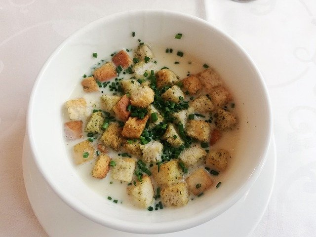

Kartoffelsuppe
| Zutaten für |
| g Kartoffel(n), festkochend |
| Möhre(n) |
| Zwiebel(n), groß |
| g Speck, gewürfelt |
| Liter Fleischbrühe |
| Liter Sahne |
| Mett-Würstchen |
Zubereitung
- Die Kartoffeln und die Möhren schälen und in kleine Würfel schneiden. Den Lauch waschen und in feine Streifen schneiden. Den Speck und die Zwiebeln in kleinere Würfel als das Gemüse schneiden und die Würstchen in 1cm-Scheiben schneiden.
- In einem Topf den Speck (nicht zu braun) auslassen, dann die Zwiebeln zusammen mit den Würstchen und dem Lauch dazugeben. Wenn die Zwiebeln glasig sind, die Kartoffel- und die Gemüsewürfel untermengen, salzen und pfeffern.
- Bei kleiner Flamme ca. 10 Minuten dünsten lassen, dann die Fleischbrühe zugießen und alles gut vermengen. Aufkochen, Deckel auflegen und bei kleiner Flamme ca. 1 Std. ziehen lassen. Zum Schluss die Sahne einrühren und zum Andicken vorsichtig nach und nach das Kartoffelpüreepulver unterrühren.
Rezept erstellt von

Valentin